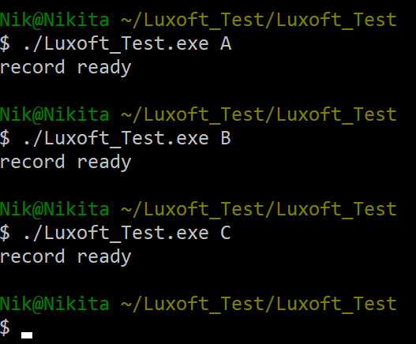

-Программа выполняет одну из операций над входным файлом (размер входного файла неограничен ), ориентируясь на аргумент командной строки.
-Файл «example_out.txt» автоматически создается и перезаписывается.
-Параметры для запуска программы: A B C

[аргумент «A»] Переставляет слова в обратном порядке из файла «example.txt» и записывает в другой файл «example_out.txt», разделенные пробелом». Словом считается любая последовательность букв и цифр.
[аргумент «B»] Меняет запятые на точки. Результат выводится в файл «example_out.txt».
[аргумент «C»] Удаляет пробелы. Результат выводится в файл «example_out.txt»;
Написаны 3 Unit Теста, но они не запускаются. Появляющуюся при запуске ошибку, к сожалению, решить не могу.
Для сборки проекта использовались [makefile + sources], реализовано с помощью Cygwin(gcc + make) Исходники ТУТ.